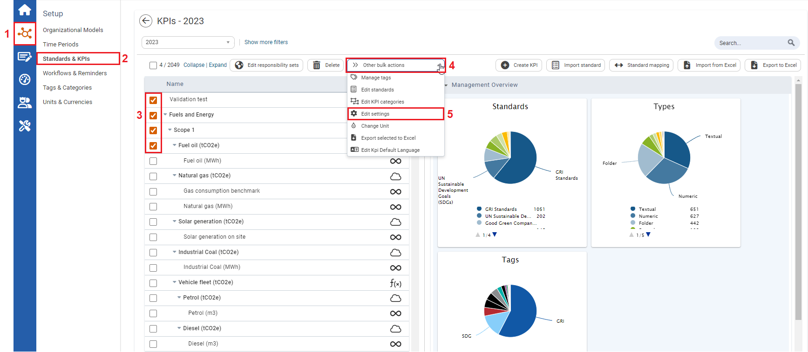
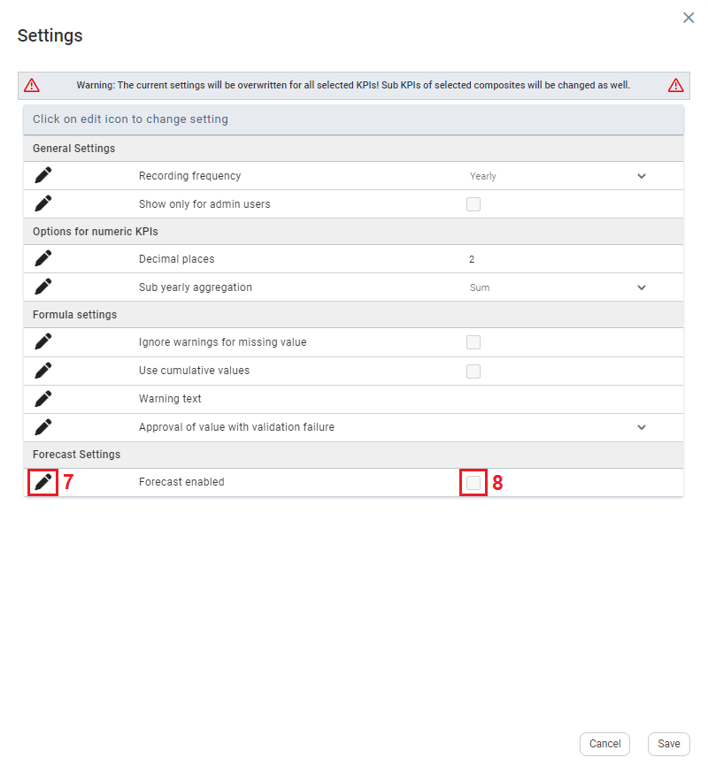
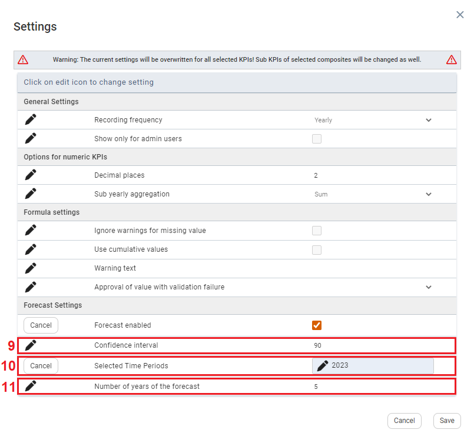

icon to the left of Forecast enabled. The checkbox to the right becomes editable.
icon to the left of Forecast enabled. The checkbox to the right becomes editable.
To use the bulk action for forecasts the setting needs to be activated in the System Settings first. The setting is called “Enable forecast”.

| 1 | On the left navigation panel, click Setup. |
| 2 | Click Standards & KPIs. |
| 3 | Select multiple numeric or formula KPIs. |
| 4 | Click >> Other bulk actions drop down menu. The dropdown menu opens. |
| 5 | Click Edit Settings. Settings window opens. |

| 7 | On the Settings window, under Forecast Settings, click the Edit icon to the left of Forecast enabled. The checkbox to the right becomes editable. |
| 8 | Click the checkbox to the right. Forecast settings will display below. |

| 9 | To edit the Confidence Interval, click the Edit The confidence interval for forecasts is used as a statistic’s mean. It refers to the percentage of probability, or certainty, that a value is in the confidence range. The larger a confidence interval for a particular estimate is, the more probable it is that the value is in the confidence range. Example: With a 90 percent confidence interval, you have a 10 percent chance of being wrong. |
| 10 | To edit the Selected Time Periods, click the Edit Note: The KPI values of the selected time periods are the basis for the forecast calculation. To see a forecast, a minimum of three years must be selected. For Further details about ARIMA, and the applied forecast method, see Enabling the Data Forecast Tool. |
| 11 | To edit Number of years of forecast, click the Edit icon in front of Number of years of the forecast, then click the Edit
|
| 12 | Click Save. The Forecast settings are updated and activated automatically for the KPIs that were selected. |
 icon in front of
icon in front of  icon that appears to the right of the
icon that appears to the right of the  icon in front of
icon in front of  icon that appears to the right of the
icon that appears to the right of the  icon that appears to the right of the
icon that appears to the right of the